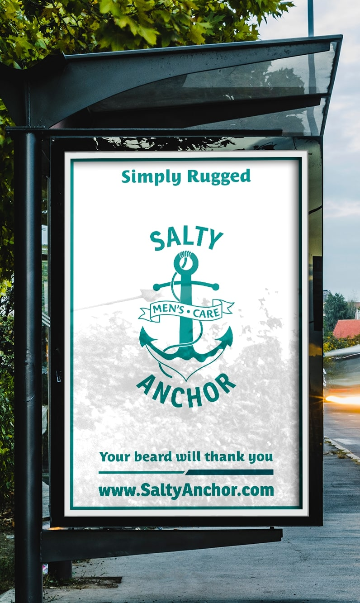
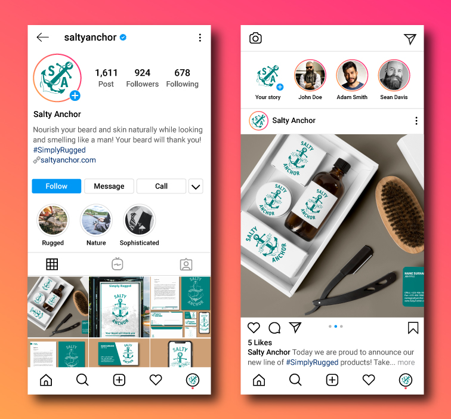
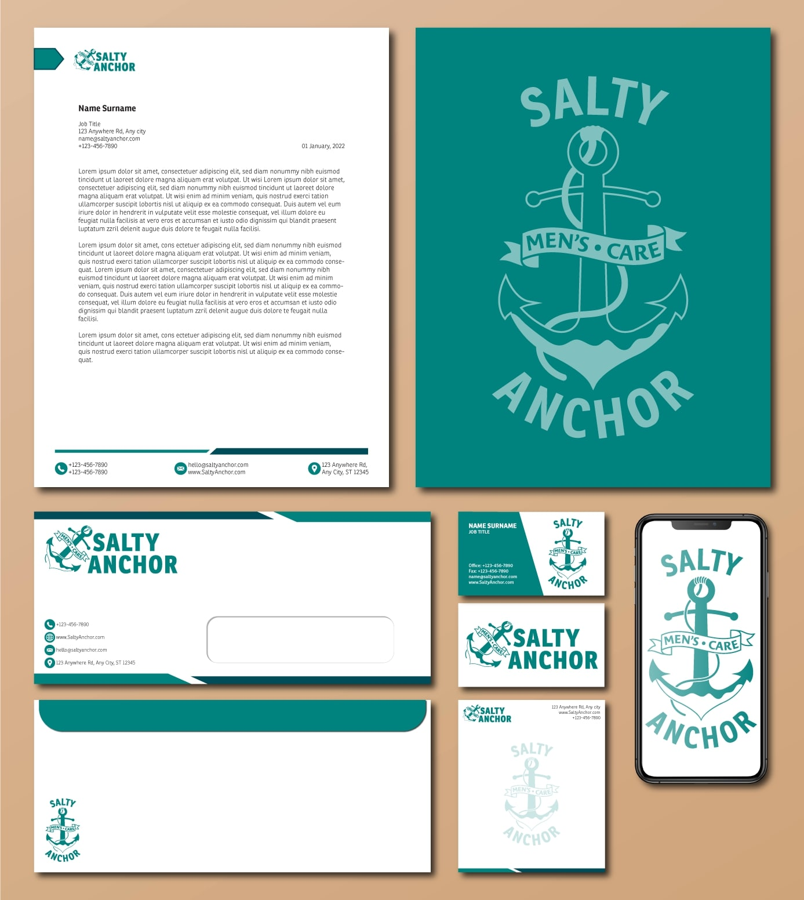
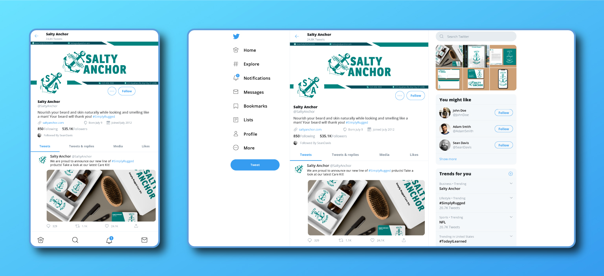

Project Information
- Role:
Brand Designer - Overview:
Salty Anchor is a premium men's grooming brand specializing in beard and skin care products. The company's mission is to provide high-quality, natural products that promote healthy and well-groomed beards while nourishing the skin. The branding aims to convey a sense of urban sophistication, masculinity, and self-care for the modern man.
Logo and Identity
For the Salty Anchor logo, I designed a clean and bold emblem playing off of the company's name and utilizing negative space. The stylized typography complements the logo, conveying a contemporary and masculine vibe. The color palette features a dark aquamarine to represent the color of the ocean. This color creates a feeling of freshness and trustworthiness.


Packaging Design
To align with the brand's positioning, the packaging design exudes a modern and premium aesthetic. I utilized sleek, minimalist layouts emphasizing the product's quality. The use of eco-friendly materials and minimalist labeling further communicates Salty Anchor's commitment to sustainability and simplicity.

Marketing Collateral
Marketing collateral for Salty Anchor includes letters, printed signage, social media graphics, and digital advertisements. The design maintains the brand's visual consistency, utilizing a harmonious blend of typography, imagery, and colors. The marketing materials highlight the benefits of Salty Anchor's products, emphasizing their natural ingredients, effectiveness, and contribution to beard and skin health.


Overall, the Salty Anchor brand identity conveys the perfect balance between urban sophistication, masculinity, and the importance of self-care for the modern man. With its visually appealing logo, premium packaging, and captivating marketing collateral, Salty Anchor establishes a strong and distinctive presence in the men's grooming industry.